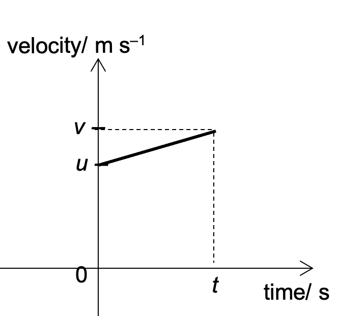

There is a set of equations that can be used for quick calculations involving the kinematics quantities of displacement, velocity, acceleration and time. In order for these equations to be valid, certain conditions need to be fulfilled. They are:
Consider a body moving with an initial velocity $u$ and travels to the right with constant acceleration $a$ for a time $t$ when its final velocity is $v$. The velocity-time graph of the body can be expressed as shown below.
The first of the 4 equations of motion can be obtained from the gradient of the graph. Since the uniform acceleration is the rate of change of velocity over time, it can be written as $a = \dfrac{v - u}{t}$. Shifting the terms around, we have $$\begin{align}v = u + at \end{align}$$
The second equation is based on the fact that the area under the v-t graph gives the change in displacement. Finding the area of the trapezium, we have $$\begin{align}s = \dfrac{1}{2}(u +v)t \end{align}$$
Substituting equation (1) into equation (2), thus removing $v$ from the equation, we have $$\begin{align}s = ut + \dfrac{1}{2}at^2 \end{align}$$
Substituting a different form of equation (1), $t = \dfrac{v - u}{a}$, into equation (2) (thus removing $t$ from the equation), we have $$\begin{align}v^2 = u^2 + 2as \end{align}$$